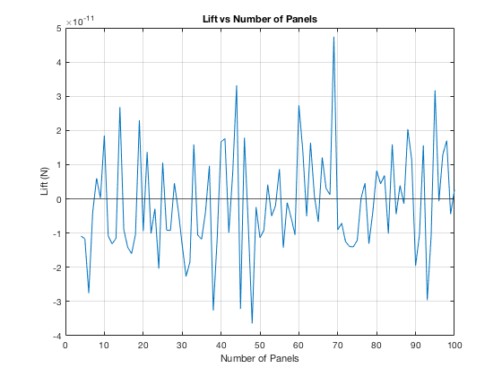
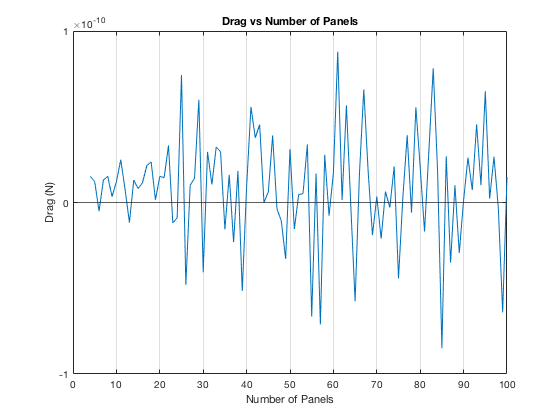
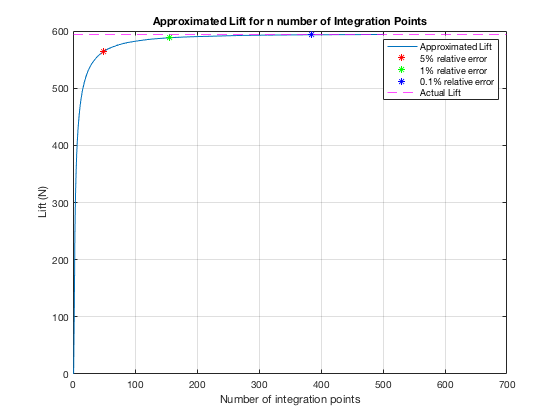
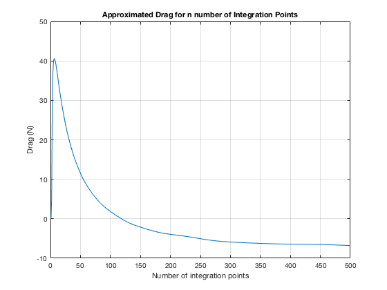

Contents
ASEN 3111 - Computational Assignment 01 - Main
Approximate the lift and drag per unit span on a stationary cylinder.
Author: Margaux McFarland Collaborators: Date: 9/19/19
clc clear all close all
Problem 1
%variables d = 1; %diameter [m] v = 30; %freestram airspeed [m/s] rho = 1.225; %air density [kg/m^3] p = -101.3e3; %free stream pressure [Pa] q = (1/2)*rho*v^2; %dynamic pressure %set up variables for simpson's rule a = 0; % lower bound b = 2*pi; %upper bound %number of panels N = 100; theta = a:b/(N*2):b; %from 0 to 2pi c_p = 1 - 4.*(sin(theta)).^2; %coefficient of pressure P = q*c_p + p; %solve for pressure %lift and drag functions to be integrated lift_func = -P.*sin(theta).*(d/2); drag_func = P.*cos(theta).*(d/2); %prints out lift and drag values for N panels Lift = simpRule(lift_func, a, b, N, theta) Drag = simpRule(drag_func, a, b, N, theta) %plot lift and drag plotLift(a, b, p, q, d, N) fprintf("The minimum number of panels needed to accurately apporximate the lift and/or drag is 2 panels.\n"); 
Problem 2
%number of integration points for trap rule n = 30; %lift and drag [L,D] = airfoilLiftDrag(n) %error analysis %find lift/drag with a very large number of points and estimate that value as %the actual values N_high = 500; [L_actual, D_actual] = airfoilLiftDrag(N_high) fprintf("Number of equispaced integration points required to obtain a lift soltuion with...\n"); for i = 0:500 [L1, ~] = airfoilLiftDrag(i); if abs(L_actual - L1) <= 0.05*L_actual % 5 percent relative error fprintf("5 percent relative error: %d\n", i); for j = i:500 [L2, ~] = airfoilLiftDrag(j); if abs(L_actual - L2) <= 0.01*L_actual % 1 percent relative error fprintf("1 percent relative error: %d\n", j); for k = j:500 [L3, ~] = airfoilLiftDrag(k); if abs(L_actual - L3) <= 0.001*L_actual % 1/10 percent relative error fprintf("1/10 percent relative error: %d\n", k); break; end end break; end end break; end end %plot alpha = 9; %degress plotLift2(p, q, d, 500, alpha, i, j, k, L1, L2, L3, L_actual);
L = 542.3095 D = 20.6485 L_actual = 594.0019 D_actual = -6.7945 Number of equispaced integration points required to obtain a lift soltuion with... 5 percent relative error: 50 1 percent relative error: 155 1/10 percent relative error: 385 
Functions Called
The following functions were built and called as apart of this assignment.
function F = simpRule(f, a, b, N, theta) %simpRule This function uses Simpson's Rule % Simpson's Rule approximates the area under a curve by a parabola % connecting the curve at the endpoints and the midpoints. This function % takes in the function (f) being approximated,the upper(b),lower bounds % (a), the number of panels (N), and returns the area. % % Author: Margaux McFarland % Collaborators: % Date: 9/13/19 h = (b-a)/(2*N); %height of each panel %area being approximated F = 0; for i = 1:N %indicied of points along cylinder k1 = 2*i - 1; k2 = 2*i; k3 = 2*i + 1; %sum each force F = F + f(k1) + 4*f(k2) + f(k3); end F = F * (h/3); end
function F = simpRule(f, a, b, N, theta) %simpRule This function uses Simpson's Rule % Simpson's Rule approximates the area under a curve by a parabola % connecting the curve at the endpoints and the midpoints. This function % takes in the function (f) being approximated,the upper(b),lower bounds % (a), the number of panels (N), and returns the area. % % Author: Margaux McFarland % Collaborators: % Date: 9/13/19 h = (b-a)/(2*N); %height of each panel %area being approximated F = 0; for i = 1:N %indicied of points along cylinder k1 = 2*i - 1; k2 = 2*i; k3 = 2*i + 1; %sum each force F = F + f(k1) + 4*f(k2) + f(k3); end F = F * (h/3); end % <include>plotLift.m</include> function [] = plotLift(a, b, p, q, d, n) %This function plots lift and drag versus the number of panels used for %simpsons rule. Takes in the upper and lower bounds, free stream pressure, %dynamic pressure, diameter, and total number of panels. % % Author: Margaux McFarland % Collaborators: % Date: 9/13/19 N = 4:n; for i = N theta = a:b/(i*2):b; c_p = 1 - 4.*(sin(theta)).^2; %coefficient of pressure P = q*c_p + p; %solve for pressure lift_func = -P.*sin(theta).*(d/2); drag_func = P.*cos(theta).*(d/2); %lift and drag vectors for each number of panels Lift(i-3) = simpRule(lift_func, a, b, i, theta); Drag(i-3) = simpRule(drag_func, a, b, i, theta); end %plot lift figure(1) plot(N, Lift); grid on xlabel("Number of Panels"); ylabel("Lift (N)"); title("Lift vs Number of Panels"); hold on yline(0); %plot drag figure(2); plot(N, Drag); grid on xlabel("Number of Panels"); ylabel("Drag (N)"); title("Drag vs Number of Panels"); hold on yline(0); end % <include>trapRule.m</include> function F = trapRule(x, f, N) %trapRule This function uses the composite trapezoidal rule % Composite trap rule approximates the area under a curve by creating a % trapezoid at integration points along the curve. Returns the % approximated area F under the curve represented by the vector f. % % Author: Margaux McFarland % Collaborators: % Date: 9/17/19 %area F = 0; for k = 1:N %loop through integration panels %sum each trapezoid area F = F + (x(k+1) - x(k))*((f(k+1) + f(k))/2); end end % <include>plotLift2.m</include> function [] = plotLift2(p, q, d, n, alpha, i2, j, k, L1, L2, L3, L_actual) %This function plots lift and drag versus the number of panels used for %trap rule. Takes in the free stream pressure, dynamic pressure, diameter, %angle of attack, the accurancy points, and total number of integration points. % % Author: Margaux McFarland % Collaborators: % Date: 9/17/19 N = 1:n; count = 1; for i = N [L(count), D(count)] = airfoilLiftDrag(i); count = count + 1; end %lift plot figure(3) plot(N, L); grid on xlabel("Number of integration points"); ylabel("Lift (N)"); title("Approximated Lift for n number of Integration Points"); hold on %mark points on plot where accuracies acheived plot(i2, L1, 'r*'); hold on; plot(j, L2, 'g*'); hold on; plot(k, L3, 'b*'); hold on %actual value yline(L_actual,'m--'); xlim([0 700]); %so points are visible with legend legend("Approximated Lift", "5% relative error","1% relative error","0.1% relative error", "Actual Lift"); %drag plot figure(4) plot(N, D); grid on xlabel("Number of integration points"); ylabel("Drag (N)"); title("Approximated Drag for n number of Integration Points"); end % <include>airfoilLiftDrag.m</include> function [L, D] = airfoilLiftDrag(N) %airfoilLiftDrag This function takes in a number of integration points and %then solves for lift and drag using Cp.mat to get the coefficient of %pressure. Uses a NACA 0012 air foil. % % Author: Margaux McFarland % Collaborators: % Date: 9/19/19 %given variables c = 2; %chord length [m] alpha = 9; %angle of attack [deg] d = 1; %diameter [m] v = 30; %freestream airspeed [m/s] rho = 1.225; %air density p = 101.3e3; %free stream pressure [Pa] q = (1/2)*rho*v^2; %dynamic pressure %percent location along chord (x/c) x = 0:1/N:1; %x = linspace(0,c, N); load Cp %cp value at each location (upper surface) cp_up = fnval(Cp_upper, x); %cp value at each location (lower surface) cp_low = fnval(Cp_lower, x); P_up = q.*cp_up + p; %solve for pressure P_low = q.*cp_low + p; %solve for pressure %get thickness (NACA 0012) t = 12/100; y_t = (t/0.2)*c.*(0.2969.*sqrt(x) - 0.1260.*x - 0.3516.*x.^2 + 0.2843.*x.^3 - 0.1038.*x.^4); %normal force (coefficient) cn = (1/c)*trapRule(c.*x,cp_low-cp_up, N-1); %axial force (coefficient) ca = (1/c)*trapRule(y_t, cp_up-cp_low, N-1); %coefficients cl = cn*cosd(alpha) - ca*sind(alpha); cd = cn*sind(alpha) + ca*cosd(alpha); L = cl*q; D = cd*q; end
Lift = 2.6233e-12 Drag = 1.4934e-11 The minimum number of panels needed to accurately apporximate the lift and/or drag is 2 panels.